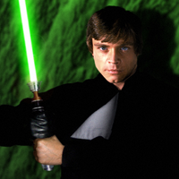
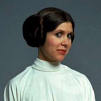
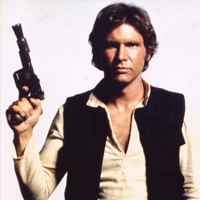
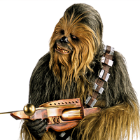
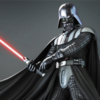
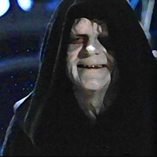
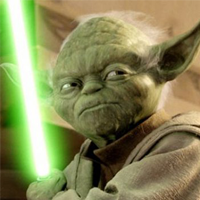
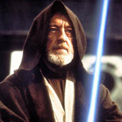
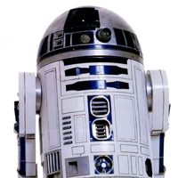
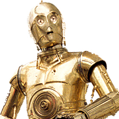

Key:
Luke Skywalker

- Goal: Luke's goal is to re-establish the Jedi Order.
- Strength & Weakness: His faith in his friends is his weakness, according to Palpatine.
- Relationships: Luke lived with his aunt and uncle on Tattooine. The history of his father (Darth Vader) is kept a secret from him. His sister is Leia Organa, initially unknown to him. His epic hero's journey begins when he accepts Ben (Obi-Wan) Kenobi's offer to train him in the ways of The Force.
- Transformation: Luke makes his first transformation when his aunt and uncle whom he lived with are killed. He didn't want to accept Obi-Wan's offer to learn the ways of The Force, but after their tragic death, he accepts the offer. After Obi-Wan's death, Luke goes to Dagobah to complete his training with Jedi Master Yoda. Yoda however says that Luke will not truly be a Jedi until he confronts his evil father, Darth Vader. This leads to the dramatic point at which Luke faces his father and Emperor Palpatine, but Vader protects Luke by killing Palptaine himself, becoming mortally wounded in the process. Luke removes Vader's mask and looks upon his face for the first and only time, as Vader, now as the redeemed Anakin Skywalker, tells Luke that there was still good left in him.
Leia Organa

- Goal: Her goal is to have the Rebel Alliance succeed in restoring the Republic.
- Strength & Weakness: Her weakness is her attitude. Her strength comes from her being in the senate, allowing her to have political ties while also being influential.
- Relationships: Leia is the twin sister of Luke Skywalker. They were separated at birth, and she was raised as a royal by her "father," Bail Organa. Her real father is Darth Vader, or Anakin Skywalker.
- Transformation: She gains responsibility in leading the Rebel Alliance and becomes a better leader, and she becomes less hostile toward people like Han, and falls in love with him. Her change in attitude also leads to a better relationship with Luke, especially after finding out that he is her brother.
Han Solo

- Goal: His original goal is to get paid so he can pay off his debt to Jabba the Hutt.
- Strength & Weakness: His weakness is his lack of belief in the Force, even though it brought him and Leia together. He can also be overconfident at times saying things like "never tell me the odds." His strength is his ability to help his friends and stick with them.
- Relationships: Han Solo pilots the Milennium Falcon along with his friend Chewbacca. He meets Luke, Leia, and Obi-Wan and helped them escape from the Death Star and also destroy it. He falls in love with Leia and has a relationship with her.
- Transformation: Han Solo went from being a smuggler to a hero of the Rebel Alliance.
Chewbacca

- Goal: His goal is to work with Han Solo since he swore a life debt to him.
- Strength & Weakness: Chewbacca's strength is that he is very loyal and caring to everyone, including the droids (C3PO and R2D2). His weaknesses come from him being a Wookie. His anger can get the best of him, but even if he controls it, he appears very intimidating to others.
- Relationships: Chewbacca swore a life debt to Han Solo, who stopped an Imperial offcier from beating him. They became smugglers together, piloting the Milennium Falcon together.
- Transformation: Chewbacca's only partner was Han Solo, and he turned into someone with lots of connections and allies throughout the movies. He also becomes a hero of the Rebel Alliance.
Darth Vader

- Goal: As Darth Vader, his goal is to turn his son, Luke Skywalker, to the dark side.
- Strength & Weakness: He is a powerful Jedi, but was easily persuaded and let his emotions get the best of him. He is also more machine than man, which hinders his abilities.
- Relationships: As his alter ego Anakin Skywalker, he was married to Padmé Amidala and had two twin children, Luke Skywalker and Leia Organa. His master was Obi-Wan until his turn to the dark side, where he holds a close relationship with Palpatine.
- Transformation: Making one of the most notable of transformations, Darth Vader is born when Anakin Skywalker succumbs to the dark side in Episode III. He went from being a Jedi who would fight for good, to leading The Empire and controlling the galaxy. He makes another dramatic transformation when he sees Palpatine hurting Luke in Episode VI, and kills Palpatine by throwing him into the Death Star's core. Wounded in the process, he tells Luke in his dying breath that there was some good left in him.
Emperor Palpatine

- Goal: His goal is to have complete control over the galaxy.
- Strength & Weakness: His overconfidence is his weakness according to Luke. His hunger for power is also a weakness.
- Relationships: Darth Vader is his apprentice and fellow Sith lord, and wants Luke to replace Vader as his new apprentice.
- Transformation: Palpatine went from hiding in the shadows during the time of the Republic, to being a full fledged enemy by controlling the Empire. As chancellor, the Republic "rotted from within," by declaring himself as emperor once he was in office. After declaring himself as emperor, he also shut himself away and plotted on how to expand his empire and his Sith agenda.
Yoda

- Goal: Yoda's goal is to bring balance back to the Force, preserve the Jedi Order, and train Luke the ways of the Jedi.
- Strength & Weakness: His weakness is that he has been exiled, and is out of touch. He is also very old (900 years) and very small in size. His strength is that he is a great Jedi with great knowledge of the Force.
- Relationships: Yoda is the one who trains Luke in the ways of the Force. He is also Obi-Wan's Jedi master.
- Transformation: He transforms from the Jedi grandmaster or Jedi elder into a Force ghost. He can see that the ways of the Jedi are carried on and can observe this way.
Obi-Wan Kenobi

- Goal: His goal was to let Luke know who his true father is, while training him to become a skilled Jedi.
- Strength & Weakness: Obi-Wan's strengths come from being a great Jedi who is skilled with a lightsaber and the Force. His weakness is that he is very old in the original trilogy, and can attract attention easily if he uses his Jedi powers.
- Relationships: Obi-Wan helps Luke on his journey to become a Jedi. He also helped keep the droids R2D2 and C3PO safe while locating Han and Chewbacca.
- Transformation: He transforms into a Force ghost to become one with the Force. After becoming one with the Force, he can continue training and guiding Luke.
R2-D2

- Goal: R2's goal is to get Leia's message to Obi-Wan at the beginning of the movie. His goal is to also serve his masters, Leia and Luke. He also assists with communicating with other things such as Luke's ship.
- Strength & Weakness: Being a droid, R2 is often abused since droids aren't treated too kindly in the Star Wars universe. He also doesn't really speak, and isn't humanoid so he can't maneuver very easily or pick himself up when he falls down. His strength is that he is a droid and can't "die," and can keep a low profile since he isn't a human or other humanoid.
- Relationships: R2D2 and C3PO stick together almost the entire time. He is also connected to Leia, who gave him a message for Obi-Wan, and then also meets Obi-Wan himself and Luke. Eventually, R2 also gets involved with Han and Chewbacca too.
- Transformation: He goes from being a tool and a messenger to being a hero who helped with the Rebel Alliance.
C-3PO

- Goal: His goal is to help R2 get Leia's message to Obi-Wan. His goal is to also serve his masters, Leia and Luke. He also assists them by helping to translate different languages for them so they can communicate with other races and aliens.
- Strength & Weakness: His weakness comes from being a droid. Droids are often treated poorly in Star Wars, both physically and because they just aren't human or humanoid. His strength is that he can't really "die," and can keep somewhat of a low profile since it's usually only humans or other races that are up to no good.
- Relationships: C3PO hangs out with R2D2 throughout the entire series. He has ties with Leia, Luke, Obi-Wan, Han, Chewbacca, and more. Both C3PO and R2D2 have seen pretty much everything in all of the Star Wars films and know just about all of the characters because of this.
- Transformation: He goes from being a tool and a messenger to being a hero who helped with the Rebel Aliiance. He was also worshipped by the Ewoks for some time.